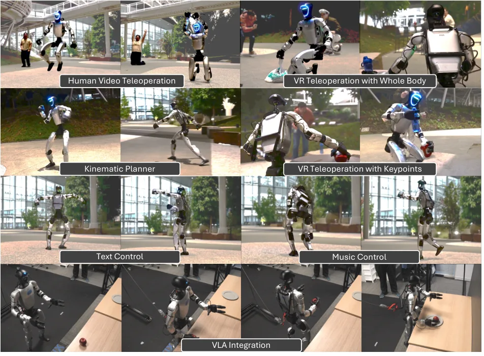
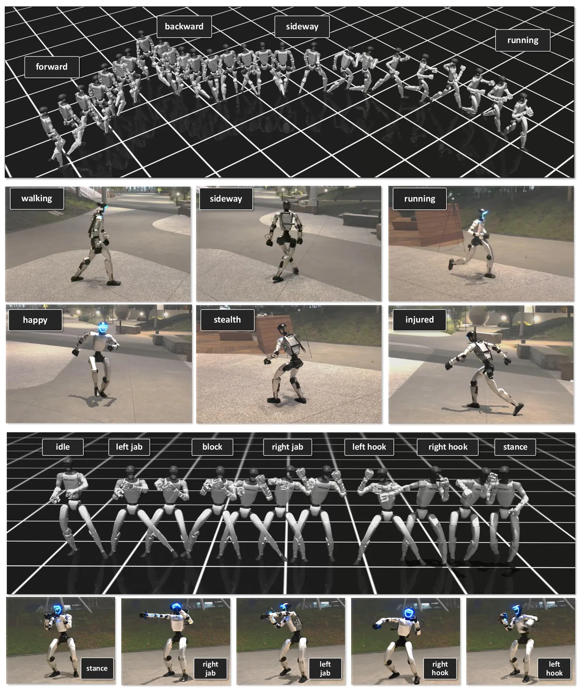

Supersizing Motion Tracking for Natural Humanoid Whole-Body Control · 三编码器 → FSQ 64 维 token → 双解码器 · Unitree G1 · 50Hz
| 项 | 内容 |
|---|---|
| 标题 | SONIC: Supersizing Motion Tracking for Natural Humanoid Whole-Body Control |
| 作者 | Zhengyi Luo†, Ye Yuan†, Tingwu Wang†, Chenran Li†, Fernando Castañeda†（共同一作）；Sirui Chen, Zi-Ang Cao, Jiefeng Li, David Minor, Qingwei Ben, Jinhyung Park, David Sami, Zi Wang, Xingye Da, Runyu Ding, Cyrus Hogg, Lina Song, Edy Lim, Eugene Jeong, Tairan He, Haoru Xue, Wenli Xiao, Simon Yuen, Jan Kautz, Yan Chang, Umar Iqbal 为署名作者；Linxi “Jim” Fan‡、Yuke Zhu‡（共同指导）。全文署名合计 28 人。 |
| 机构 | NVIDIA（2788 San Tomas Expressway, Santa Clara, CA, USA），GEAR 团队 |
| 时间 | arXiv v4：2026-08-13（HTML 页首标注 arXiv:2511.07820v4 [cs.RO] 13 Aug 2026）；arXiv 编号前缀 2511 表示首次提交于 2025 年 11 月（按编号规则推断） |
| Venue | arXiv 预印本（cs.RO），采用期刊风格排版：Abstract → Introduction → Results → Materials and Methods → Supplementary，非会议双栏。期刊录用状态本页不作断言 |
| 链接 | arXiv:2511.07820 · HTML v4 · 项目页 GEAR-SONIC · 代码文档 · GitHub |
| 数据/代码可用性 | 训练+部署代码开源；动捕数据部分开源为 BONES-SEED（142,220 条序列 / 288 小时 / 522 位演员，HuggingFace bones-studio/seed）；代码快照与全部图表的表格数据存 Zenodo（DOI 10.5281/zenodo.21273312） |
| 证据级别 | L3：论文全文（含 Supplementary Tables S1–S4）+ 官方 Hydra 配置（sonic_release.yaml、all_mlp_v1.yaml、ppo_im_phc.yaml）+ 官方 loss 实现（token_losses.py）+ 部署侧 observation 配置。本页所有数字均标注来源（Fig./Table/§/文件路径） |
(1) “We show that scaling model capacity, data, and compute yields a generalist humanoid controller capable of natural, robust whole-body movements.”
(2) “We position motion tracking as a scalable task for humanoid control, leveraging dense supervision from diverse motion-capture data to acquire human motion priors without manual reward engineering.”
(3) “We build a foundation model for motion tracking by scaling along three axes: network size (1.2M to 42M parameters), dataset volume (100M+ frames from 700 hours of motion capture), and compute (21k GPU hours).”
(4) “Beyond demonstrating the benefits of scale, we further show downstream utility through a real-time kinematic planner that bridges motion tracking to tasks such as navigation, enabling natural and interactive control, as well as a unified token space that supports virtual reality (VR) teleoperation and vision-language-action (VLA) models with a single policy.”
(5) “Scaling motion tracking exhibits favorable properties: performance improves steadily with compute and data diversity, and learned policies generalize to unseen motions, establishing motion tracking at scale as a practical foundation for humanoid control.”
出处：arXiv:2511.07820v4，Abstract。上文开头的过渡句 “Current neural controllers for humanoids remain modest in size, target a limited set of behaviors, and are trained on a handful of GPUs.” 也是原句，给出问题背景。
（1）我们证明：同时放大模型容量、数据与算力，可以得到一个能做自然、鲁棒全身运动的通用人形控制器。
（2）我们把「运动跟踪」定位为人形控制的可规模化任务——它利用多样动捕数据提供的密集监督，无需求解手工奖励工程就能获得人体运动先验。
（3）我们沿三条轴放大运动跟踪，构建其基础模型：网络规模（1.2M → 42M 参数）、数据规模（来自 700 小时动捕的 1 亿+ 帧）、算力（2.1 万 GPU 小时）。
（4）除了展示规模收益，我们进一步给出下游可用性：一个实时运动学规划器把运动跟踪接到导航等任务上，实现自然、可交互的控制；以及一个统一 token 空间，让同一个策略同时支持 VR 遥操作与 VLA 模型。
（5）规模化的运动跟踪呈现良好性质：性能随算力与数据多样性稳定提升，学到的策略能泛化到未见运动，从而把「规模化运动跟踪」确立为人形控制的实用基础。
原文：“Yet for sim-to-real humanoid control, similar scaling gains have not been achieved. State-of-the-art humanoid control policies are often small neural networks, such as three-layer multilayer perceptrons (MLPs), trained on a few GPUs for a single task.”（§1 Introduction）
原文：“Why hasn’t humanoid control scaled? The fundamental issue is task selection.”（§1）
论文给出的推理链：
原文：“In this work, we address both challenges by identifying motion tracking as the scalable foundational task for humanoid control. Motion tracking leverages human motion capture data, which provides dense, frame-by-frame supervision without reward engineering.”（§1）
并明确指出前人局限：“they are mostly limited to showing whole-body motion tracking results on training data and have not demonstrated many downstream tasks beyond motion tracking or navigation.”（§1）——SONIC 的「新」就落在（a）把跟踪放大 10× 以上、（b）证明能接下游（规划器 + VLA）。
| 组件 | 作用 | 关键事实 | 出处 |
|---|---|---|---|
| 任务选择 | 用动捕参考运动做逐帧监督，替代奖励工程 | 611 小时可用 / 1 亿+ 帧 @50Hz；33 主类 / 8,447 子类 | §3.1, Table 2 |
| 三编码器 | 机器人关节运动 E_r、人体 SMPL E_h、上体关键点+下体机器人 E_m | 均为 MLP [2048,1024,512,512] + SiLU | §3.2, Table S1 |
| 统一量化 | FSQ 把三路 latent 压到同一离散 token | 2 tokens × 32 维，32 级/维；展平 64 维 | §3.2, Table S1, 部署 encoder.dimension: 64 |
| 双解码器 | D_c 出 29 维关节目标；D_r 重建机器人运动作辅助监督 | D_r 使「人体→机器人」隐式重定向成立 | §3.2 |
| 规划器 | 潜空间自回归 in-betweening，把用户意图变成短时参考 | 段长 0.8–2.4s；<5ms（笔记本）/ ~12ms（Jetson Orin）；最快 100ms 重规划一次 | §2.2, §3.3 |
| VLA 接口 | VLA 直接预测 64 维 token + 14 维手 | 78 维动作；5 个真机任务平均 75% | §2.5, Table 1 |
与旧版页面的一处修正：VLA 侧动作是「每步 78 维（64 token + 7+7 手）」，并非「40×64 的 token 序列」；40 是 GR00T N1.7 的动作时域（action_horizon=40），2.5Hz 是仓库 VLA 文档标称的接口频率（64-dim x 40、VLA 2.5Hz / SONIC 50Hz）。论文本身未给 VLA 推理频率。
依据：§3.2 与 Table S1（层宽、F=10、Δt）、all_mlp_v1.yaml（max_num_tokens: 2、fsq_level_list: 32、各模块 hidden_dims）、observation_config_sonic_release.yaml（encoder.dimension: 64）、doc_motion_reference.md（joint_pos/joint_vel 各 29 且 50Hz）。
原文：“We formulated humanoid motion tracking as a Markov Decision Process M = ⟨S, A, T, R, γ⟩, comprising state space, action space, transition function, reward function, and discount factor γ.”
状态 s_t = (s_t^p, s_t^g)：本体感知 s^p 含关节位置 q_t、关节速度 q̇_t、根角速度 ω_t、根坐标系下的重力向量 g_t、上一动作 a_(t−1)，并拼接 10 步历史：
原文：“We concatenated a 10-step history of all proprioceptive quantities and actions into s_t^p, that is, s_t^p ≜ (q_t, q̇_t, ω_t, g_t, a_(t−1))_(t−9:t), providing the policy with temporal context for anticipatory behavior.”
原文：“All state quantities are expressed in the robot’s local frame to ensure rotation invariance. We used the 6D rotation representation throughout.”
为什么是 10 帧历史 + 本地系：本地系让「同一动作在不同朝向下是同一个输入」，把朝向自由度从策略里剥离出去（朝向在部署时由 heading alignment 一次性对齐，见 §S1.2）；10 帧（@50Hz = 200ms）刚好覆盖速度/加速度的可观测窗口——加速度是二阶量，单帧给不出。
动作：原文 “The policy π outputs target joint positions a_t as actions, which are tracked by proportional-derivative (PD) controllers at each joint.” 即策略不输出力矩，输出关节角目标，PD 在 1kHz 环路里闭合——这是 sim2real 稳健的关键（力矩控制对模型误差极敏感）。
奖励：r_t = R(s_t^p, s_t^g) + P(s_t^p, a_t)，R 追根/体段位姿与速度（含头、双腕、双踝的末端项），P 罚不平滑。完整表在 Table S3（本页第 8 节给出权重）。
原文（核心动机）：“Specialized encoders map heterogeneous human and robot motion inputs into a shared latent representation, which is quantized into a universal token that drives a common robot control decoder; an auxiliary robot motion decoder facilitates feature learning and serves as an implicit human-to-robot retargeting module.”
| 模块 | 输入（配置键） | 时间维 | 输出 |
|---|---|---|---|
| E_r（g1） | command_multi_future_nonflat + motion_anchor_ori_b_mf_nonflat（+ command_z_multi_future_nonflat，见 5.6 的配置分层说明） | 10 帧 × 0.1s | latent → token |
| E_m（teleop） | command_multi_future_lower_body + vr_3point_local_target + vr_3point_local_orn_target + motion_anchor_ori_b | 下体 10 帧 × 0.1s；上体当前帧 | latent → token |
| E_h（smpl） | smpl_joints_multi_future_nonflat + smpl_root_ori_b_multi_future | 10 帧 × 0.02s | latent → token |
| FSQ | latent [B,2,32] | — | 离散 token，展平 64 维 |
| D_c（g1_dyn） | token_flattened + proprioception | 无时间维 | 29 维关节目标 |
| D_r（g1_kin） | 仅 token | 输出 10 帧 | 未来机器人参考（58 + 6D） |
原文（量化器）：“The encoded latent representation is quantized into a universal token z using Finite Scalar Quantization (FSQ), with two tokens, each a D_z-dimensional vector with L_z quantization levels per dimension.”
为什么 FSQ 而不是 VQ-VAE——原文给了三条工程理由：“FSQ avoids codebook collapse (a failure mode where large portions of the codebook go unused), requires no auxiliary commitment loss or codebook exponential-moving-average (EMA) updates, and provides clean straight-through gradient estimation that is compatible with joint PPO optimization.”（§S1.1）
这条很关键：当量化器被放进 RL 训练图里时，VQ-VAE 的码本要靠 EMA 维护，而 PPO 的梯度又要穿过量化器——两套更新机制会互相打架；FSQ 无参数码本，只有固定的分格常数，直通估计天然兼容 PPO。
原文：“All four losses are optimized jointly in a single end-to-end training loop.”
原文（关键论断）：“In practice, the auxiliary losses regularize the latent space and stabilize rather than destabilize PPO optimization, and we observed no training instabilities from coupling quantization with RL across model scales.”
这条「规模不变的不稳定性也没有出现」是本文最容易被忽视的贡献——把量化器塞进 RL 循环在很多工作里是明确会炸的。
三项辅助损失各自负责一件事：
分布式训练：在 Isaac Lab 内的多节点分布式栈上完成（论文以参考文献 [64][65] 指代具体框架，未展开）；bin-based 自适应采样按「失败率封顶」加权（Table S2：bin=1s、β=200、α=0.1），让难动作多练但不至于把采样全压在少数片段上。
原文：“At a high level, the planning process was formulated as an autoregressive motion in-betweening generation task, that is, generating the intermediate motion that smoothly connects the current pose to a target keyframe.”
三个设计点：
实用数字：段长 0.8–2.4s（由规划器自动定）；重规划最快每 100ms 一次，用户指令一变立刻重规划；S1.2 补充：规划器线程 30fps、最多 64 帧（~2s）、上下文 4 帧、新计划与旧轨迹交叉淡入 8 帧（160ms）、30fps→50fps 用位置线性插值 + 四元数 SLERP、速度用有限差分。
视频/文本/音乐统一走 GEM（“a unified generalist model that handles both motion estimation and generation by treating estimation as constrained generation”），生成的人体运动经 E_h 进策略；视频与文本都标称 ~60fps。部署侧：
原文：“All inference ran onboard a Jetson Orin GPU using TensorRT with CUDA Graph acceleration, yielding 1–2 ms per policy forward pass and ~12 ms for motion generation.”
原文：“The system used a multi-rate architecture with four concurrent loops: policy inference at 50 Hz, command streaming at 500 Hz, operator input at 100 Hz, and kinematic planning at 10 Hz.”
all_mlp_v1.yaml 里 E_r 的 inputs 有 3 项（含 command_z_multi_future_nonflat）、E_m 有 5 项；而 sonic_release.yaml 把同一键覆盖成 2 项 / 4 项（不含 command_z），decoders.g1_kin.outputs 也从 3 项覆盖成 2 项。Hydra 合并整体替换 list，所以「对着 all_mlp_v1 数输入维度」会算错。复现时以 sonic_release.yaml 为准。物理意义：PPO 负责「把动作做对」，三项辅助损失负责「把中间表示对齐」——前者是任务梯度，后者是表示梯度，两者共用同一套编码器参数。
代码映射：gear_sonic/config/aux_losses/universal_token/g1_recon_and_all_latent.yaml 的 aux_loss_coef（g1_recon 0.01，其余 1.0）；训练器 gear_sonic/trl/trainer/ppo_trainer_aux_loss.py。注意：代码里 L_recon 实际带 0.01 权重，Eq.1 写的是无权重求和——以代码为准时需要显式写系数。
物理意义：右边三项的目标都是机器人运动 g_r（不是各自的输入）。所以人体 token z_h 被逼着「解得出机器人该长什么样」——这就是隐式重定向：不需要在运行时跑 IK/重定向器。
代码映射：token_losses.py::G1ReconLoss.forward，把 decoders_cfg["g1_kin"]["outputs"] 列出的键 cat 起来算 masked MSE。
物理意义：Eq.3 是「三种方言说同一句话」；Eq.4 是「说完再翻回去不许变味」。Eq.4 比 Eq.3 更强——它要求经过一次解码+再编码仍能回到原 token，等价于在潜空间里加了往返约束。
代码映射：G1SmplLatentLoss、G1TeleopLatentLoss、TeleopSmplLatentLoss、ReencodedSmplG1LatentLoss（均在 token_losses.py）。
teleop_smpl_latent.yaml 里写着 detach_teleop_target: True，注释是「teleop is BRIDGE, train smpl to match teleop」。也就是说 teleop↔SMPL 这一对不是对称拉齐，而是把 teleop 当锚、只训练 SMPL 侧去靠。论文 Eq.3 写成对称形式，读代码才知道实际是非对称的。物理意义：把每维压到 L 个等距格点上，因此不需要码本、不会有码本塌缩；L=32、每 token 32 维，两 token ⇒ 理论组合数 32^64，但实际用到的只是数据流形附近的一小片。反传时把 round 当恒等，让 PPO 的梯度能塑形编码器。
代码映射：gear_sonic/config/actor_critic/quantizers/fsq.yaml → vector_quantize_pytorch.FSQ；级数与 token 数在 all_mlp_v1.yaml（num_fsq_levels: 32、fsq_level_list: 32、max_num_tokens: 2）。
物理意义：ρ 是重要性比，clip 限制单步更新幅度（步长 24×4096 样本、5 epoch、4 minibatch）；熵系数只有 0.013，非常小——说明任务本身梯度足够密，不需要靠探索；价值损失系数 1.0。
代码映射：gear_sonic/config/algo/ppo_im_phc.yaml（clip_param: 0.2、entropy_coef: 0.01、actor_learning_rate: 2e-5、use_clipped_value_loss: True、desired_kl: 0.01、自适应 LR ∈ [1e-5, 2e-4]）。与论文不一致处见第 12 节坑 1。
物理意义：Eq.5 把 50Hz 运动压到 12.5Hz 的潜序列（T/4 个 token），规划在潜空间做，等价于「在运动字典里选片段并拼接」而不是逐帧回归；Eq.8 是临界阻尼弹簧的解析解，t→∞ 收敛到 x_T 且不超调，把「速度指令」翻译成「1 秒后应该到哪」，从而把用户指令变成合法的 keyframe 位置。
代码映射：规划器是独立 ONNX（见文档 references/planner_onnx.md），主仓训练侧在 gear_sonic/ 规划相关配置；弹簧常数与取 t=1.0s 写在 §3.3。
物理意义：策略在 50Hz 给角度目标，PD 在 1kHz 把角度目标变成力矩并吸收高频扰动；两者频率差 20×，是「低频智能 + 高频刚度」的经典分工。
| 模块 | 结构（论文 Table S1） | 源码键值 | 输入 → 输出（形状） |
|---|---|---|---|
| E_r / E_m / E_h | MLP hidden [2048,1024,512,512] | encoders/g1_mf_mlp.yaml 等，activation SiLU | 10 帧参考 → [B,2,32] |
| 量化器 | FSQ，D_z=32，L_z=32，2 token | num_fsq_levels: 32、fsq_level_list: 32、max_num_tokens: 2 | [B,2,32] → 展平 [B,64] |
| D_c（actions） | MLP [2048,2048,1024,1024,512,512] | decoders/g1_dyn_mlp.yaml | token(64) + 本体 → [B,29] |
| D_r（refs） | MLP [2048,1024,512,512] | decoders/g1_kin_mf_mlp.yaml | token(64) → [B,10,D]（D 依 g1_kin.outputs 的键与 release 覆盖而定，论文未给数值） |
| 动作头 | 对角高斯，维度 29（Table S1 写作 Diagonal Gaussian / 29） | DiagGaussian 策略头 | 均值 + 标准差 |
| Critic | MLP [2048,2048,1024,1024,512,512] | critics/mlp.yaml，running_mean_std: True | 特权观测 → [B,1] |
| 参考时域 | F_r=F_m=F_h=10；Δt_r=Δt_m=0.1s、Δt_h=0.02s | num_future_frames: 10、dt_future_ref_frames: 0.1、smpl_dt_future_ref_frames: 0.02 | — |
| 部署输入 | encoder 输入 1751 维（1 维 encoder_index + 1750 维 tokenizer obs） | observation_config_sonic_release.yaml 头注释 | → [B,64] token |
| 参数总量 | 1.2M / 16M / 42M 三档 | 论文未给逐模块分解 | — |
说明：D_r 输出维度论文只写「重建机器人运动命令」，没有给具体数字；按仓库 joint_pos/joint_vel 各 29 列 + 6D 锚点朝向推测为 64/帧，属「原文未写→推断」，表中标为「60 或 64（依配置覆盖）」以提示不确定性。
| 超参 | 论文 Table S2 | 源码实测 | 备注 |
|---|---|---|---|
| 并行环境/GPU | 4096 | num_envs: 4096（sonic_release.yaml） | 一致 |
| 每环境步数 | 24 | num_steps_per_env: 32 → 被 release 覆盖为 24 | 配置分层覆盖 |
| 学习 epoch / minibatch | 5 / 4 | num_learning_epochs: 5 / num_mini_batches: 4 | 一致 |
| γ / λ / clip | 0.99 / 0.95 / 0.2 | 同 | 一致 |
| 熵系数 | 0.013 | entropy_coef: 0.01 | 不一致 |
| 价值损失系数 | 1.0 | value_loss_coef: 1.0 | 一致 |
| Actor / Critic LR | 2e-5 / 1e-3 | 同 | 一致 |
| 最大梯度范数 | 0.1 | ppo 基础 1.0 → release 覆盖 0.1 | 必须看最终组合结果 |
| 目标 KL / 自适应 LR | 0.01 / [1e-5, 2e-4] | 同（schedule: adaptive） | 一致 |
| 初始噪声 / 噪声夹取 | 0.05 / [0.001, 0.5] | init_noise_std: 0.05、std_clamp_min/max | 一致 |
| 自适应采样 | bin 1s、失败率上限 β=200、混合 α=0.1 | adp_samp_failure_rate_max_over_mean: 200 | 一致 |
| 训练规模 | 128 GPU × 7 天 ≈ 21k GPU 小时；50k 迭代 | num_learning_iterations: 100000（上限，可早停） | 论文报告 50k 迭代已平台 |
| 项 | 公式 | 权重 |
|---|---|---|
| 根位置 | exp(−‖p^p − p^g‖² / 0.3²) | 0.5 |
| 根朝向 | exp(−‖o^p − o^g‖² / 0.4²) | 0.5 |
| 体段位置（相对） | exp(−mean_b ‖p_b^p,rel − p_b^g,rel‖² / 0.3²) | 1.0 |
| 体段朝向（相对） | exp(−mean_b ‖o_b^p,rel − o_b^g,rel‖² / 0.4²) | 1.0 |
| 体段线速度 | exp(−mean_b ‖v_b^p − v_b^g‖² / 1.0²) | 1.0 |
| 体段角速度 | exp(−mean_b ‖ω_b^p − ω_b^g‖² / 3.14²) | 1.0 |
| 末端位置（5 点） | exp(−(1/5)Σ_k ‖p_k^p − p_k^g‖² / 0.1²)，k∈{头, 双腕, 双踝} | 2.0 |
| 动作变化率 | ‖a_t − a_(t−1)‖² | −0.1 |
| 关节限位 | Σ_j 1[q_j ∉ [q_min, q_max]] | −10.0 |
| 非期望接触 | Σ_(c∉{踝,腕}) 1[‖F_c‖ > 1.0N] | −0.1 |
| 抗抖（腕/头角速度） | Σ_k ‖ω_k‖² · 1[‖ω_k‖ > 1.5] | −5e-3 |
| 脚加速度 | Σ_(踝) ‖q̈_k‖² | −2.5e-6 |
读法：末端项权重 2.0 最高（头/腕/踝位置），关节限位 −10.0 是唯一的硬惩罚；抗抖与脚加速度的量级只有 1e-3~1e-6，属于「只在越界时才生效的开关式正则」，不是主要约束力。
cat_upper_body_poses: true、概率 0.5（把上体帧拼接做时间轴增强）。| 轴 | 设置 | 结果（test-content，OOD） | 来源 |
|---|---|---|---|
| 数据 | 4M / 10M / 22M / 100M 帧（≈20k / 50k / 110k / 317k clips） | 随数据量单调提升；子集按子类均匀采样以保持多样性 | §2.1 |
| 模型 | 1.2M / 16M / 42M | 最大模型 99.6% 成功、23.8mm MPJPE-L；最小 1.2M 为 98.0% / 27.7mm | §2.1 原文数字 |
| 算力 | 16 / 32 / 128 GPU（均 50k 迭代，≈2k / 9k / 21k GPU 小时） | 同迭代数下 GPU 越多渐近性能越好（大 batch 提升优化稳定性） | §2.1 |
| 误差棒 | 每配置 6 个评测 checkpoint | mean ± 1 s.d. | §2.1, §3.7 |
结论：性能沿三轴单调上升，且 OOD 增益最大——"Gains were most pronounced on OOD motions, confirming that scale improves generalization."
| 方法 | 训练数据 | test-content SR | test-repetition SR | PHUMA SR | MPJPE-L |
|---|---|---|---|---|---|
| SONIC | 自有 611h / 1 亿+ 帧 | 98.5% | 99.2% | 97.2% | 23.7mm |
| BeyondMimic | LaFAN（单动作，作者按公开代码重训为多动作） | 82.0% | 85.4% | 73.8% | 40.9mm |
| Any2Track | LaFAN | 61.6% | 69.4% | 78.5% | 论文未给 |
| GMT | AMASS | 论文正文只给出这两条基线的逐项数字，GMT 以图（Fig. 2D–G）呈现，正文未列具体值 | |||
结论：MPJPE-L 相对 BeyondMimic 降 42%（23.7 vs 40.9mm）；PHUMA 上 97.2% 尤其值得注意，因为 PHUMA 来自不同重定向管线，分布外程度更高。作者也明确限定了这个对比的性质：“This comparison primarily reflects cross-dataset generalization and scaling effects rather than a fully data-matched benchmark”。
评测口径：三套测试集（test-content 7,016 clips/15h、test-repetition 9,395 clips/12h、PHUMA 68,326 motions）；成功判据为「根高度或末端高度偏离参考 > 0.25m」，与以全局根位置误差（如 0.5m）判定的旧工作不同——因为 SONIC 做的是局部跟踪，不追全局轨迹。基线对比在 MuJoCo 里用同一终止条件重测。
| 指标 | SONIC（通用策略） | OpenHomie（专用运动控制器） | 来源 |
|---|---|---|---|
| 整体存活率（0–5 m/s 指令域） | 98.5% | 43.0% | §2.1 |
| 失效阈值 | ~4 m/s 仍近 100% | 超 2 m/s 开始崩，超 2.5 m/s 低于 20% | §2.1 |
| 算力伸缩 | 继续收益 | 超 8 GPU 即平台（Fig. S6） | §2.6 |
结论：通用跟踪器在「专用控制器的本行」（速度跟踪）上反而赢了 —— 数据多样性比任务专用化更值钱；而且专用控制器在算力上已经饱和，通用策略没有。
| 指标 | 仿真 | 真机 | 来源 |
|---|---|---|---|
| 成功率（124 条动作，1 次/条） | 100% | 99.2%（123/124） | §2.1, Study Design |
| 整体 MPJPE-L | 22.3mm | 25.7mm | §2.1 |
| 上体 MPJPE-L | 21.8mm | 22.2mm | §2.1（差距最小） |
| 脚部 MPJPE-L | 29.0mm | 53.7mm | §2.1（差距最大） |
结论：整机成功率几乎不掉（99.2% vs 100%），但误差分布变了——脚部误差翻近一倍，说明「真机接触动力学」是唯一没被域随机化完全覆盖的缺口。
| 配置 | TC SR | TC MPJPE-L | TC 速度距 | TC 加速度距 | TR SR | TR MPJPE-L |
|---|---|---|---|---|---|---|
| (A) FSQ（ours，128 GPU） | 99.3 | 26.6 | 3.14 | 1.17 | 99.6 | 25.5 |
| (A) VQ-VAE（4 头/码本 512/2 token） | 98.7 | 35.3 | 3.76 | 1.37 | 99.3 | 32.2 |
| (B) FSQ-16-16 | 96.9 | 35.7 | 3.68 | 1.26 | 97.5 | 32.7 |
| (B) FSQ-16-32 | 98.3 | 29.7 | 3.39 | 1.21 | 98.7 | 28.4 |
| (B) FSQ-32-16 | 98.3 | 30.3 | 3.44 | 1.22 | 98.4 | 28.9 |
| (B) FSQ-32-32（默认） | 98.8 | 27.5 | 3.25 | 1.19 | 99.3 | 26.3 |
| (C) 仅机器人 E_r | 99.6 | 23.8 | 2.89 | 1.12 | 99.8 | 22.5 |
| (C) 仅人体 E_h | 99.6 | 24.4 | 3.04 | 1.24 | 99.8 | 23.1 |
| (C) 混合 E_m | 99.2 | 26.5 | 3.25 | 1.22 | 99.7 | 25.2 |
TC=test-content，TR=test-repetition，单位 mm；表注明确「每个配置只在完整测试集上评一次，属描述性，不做统计检验」。§3.6 还给出两条对比：级数 vs 维度——FSQ-32-16（30.3mm）比 FSQ-16-32（29.7mm）差，说明加维度优于加级数；VQ-VAE 差 8.7mm。
| 任务 | 接口 | 训练数据 | 试次 | 成功率 |
|---|---|---|---|---|
| 苹果→盘子 | 3-point | 300 条（单物体） | 20 | 90% |
| 抓胡萝卜 | whole-body | 3,900 条（多物体） | 20 | 75% |
| 抓刷子 | whole-body | 3,900 条（多物体） | 20 | 95% |
| 踩踏板开垃圾桶 | whole-body | 200 条 | 10 | 70% |
| 易拉罐→垃圾桶（五段串联） | whole-body | 1,000 条（多物体） | 10 | 60% |
| 电钻装箱搬运 | whole-body | 300 条 | 10 | 70% |
| 五任务平均 | — | — | — | 75% |
| 动作空间消融（Table 1B） | FSQ token | 显式 SMPL 位姿 | 差值 |
|---|---|---|---|
| 抓胡萝卜 | 75% | 60% | +15 |
| 踩踏板开垃圾桶 | 70% | 20% | +50 |
| 易拉罐→垃圾桶 | 60% | 0% | +60 |
| 平均 | 68% | 27% | +42 |
结论：VLA 的动作空间必须「低维且结构化」；任务越复杂差距越大（0% vs 60%），因为高维连续位姿空间会把小预测误差放大成跟踪失败。
| 变量 | 形状 | 物理意义 |
|---|---|---|
z | [B,64]（2×32 展平） | 通用运动 token：机器人/人体/遥操作三路共享的离散「运动意图」编码 |
s_p | [B,10,~275] | 本体感知 10 帧历史（q, q̇, ω, 重力, 上一步动作），给解码器速度/加速度线索 |
a | [B,29] | 目标关节角，交给 PD 闭环执行 |
g_r | [B,10,D] | 未来 10 帧机器人参考（D 依 g1_kin.outputs 的键而定） |
z_r / z_h / z_m | 各 [B,64] | 同一时刻同一运动的三路 token（r=机器人，h=SMPL，m=遥操作） |
# 出处：gear_sonic/config/exp/manager/universal_token/all_modes/sonic_release.yaml
# gear_sonic/config/aux_losses/universal_token/g1_recon_and_all_latent.yaml
# gear_sonic/config/algo/ppo_im_phc.yaml
# 1) 采样哪一路输入：三路等概率（encoder_sample_probs 三个 1.0，未归一化）
mode = sample_p(["g1", "teleop", "smpl"], probs=[1.0, 1.0, 1.0])
# → 逼同一个 64 维 token 空间对三种「方言」都成立
# 2) 编码 + 量化：注意三路共用同一 FSQ，码本是隐式的（无参数）
lat = Enc[mode](tokenizer_obs[mode]) # MLP[2048,1024,512,512] → [B,2,32]
z = FSQ(lat).flatten(1) # round 到 32 级格点；直通估计回传梯度
# 3) 两个解码器分工：D_c 出动作，D_r 只吃 token 出参考（辅助监督）
a = D_c(z, sp) # [B,29] 关节角目标（对角高斯）
g_hat= D_r(z) # [B,10,D] 未来参考重建
# 4) 四损失：PPO 更新 enc/quant/D_c/critic；其余三项更新 enc/D_r
L = ppo_clip(a, adv, clip=0.2, ent=0.013, vf=1.0)
+ 0.01 * mse(g_hat, g_r) # Eq.2：人体 token 走这里 = 重定向损失
+ 1.00 * (mse(z_r, z_h) + mse(z_r, z_m) + mse(z_m, z_h)) # Eq.3：三路 token 两两对齐
+ 1.00 * mse(Enc_r(D_r(z_h)), z_r) # Eq.4：人→机→人 往返一致
# 注：0.01 / 1.00 的系数来自 aux_loss_coef；论文 Eq.1 写作无权重求和
物理意义串起来：PPO 把「跟踪」这个任务的梯度打到编码器上，四项辅助损失则保证「编码器的输出不被某一种输入格式独占」。没有 Eq.2，z_h 可以退化成任意可解码的东西；没有 Eq.3，三路会各自漂移；没有 Eq.4，人→机的映射只在单向成立，VLA 拿到的 token 分布就不一致。β=200 的失败率封顶让难动作被过采样但不过度（adp_samp_failure_rate_max_over_mean: 200）。
| 变量 | 形状 | 物理意义 |
|---|---|---|
encoded_latents["g1" / "smpl" / "teleop"] | [B,64] | 三路编码后的连续 latent（量化前） |
encoder_masks["g1_has_smpl"] | [B] bool | 只有「同一运动同时有机器人+人体标注」的样本才参与对齐 |
frame_mask | [B,10,1] | 变长片段/补齐的帧级掩码，避免 padding 帧污染损失 |
# 出处：gear_sonic/trl/losses/token_losses.py
# G1ReconLoss.forward（L528–557）：Eq.2 的实现
g1_target = cat([tokenizer_obs[k] for k in decoders_cfg["g1_kin"]["outputs"]], dim=-1)
g1_pred = cat([decoded_outputs["g1_kin"][k] for k in decoded_outputs["g1_kin"]], dim=-1)
# 时间维对齐：把长的一侧截到短的一侧，避免 10 帧 vs 输出帧数不一致直接报错
mask = _build_frame_mask_for_loss(frame_mask, num_frames) # [B,10,1]
loss = _compute_masked_loss(g1_pred, g1_target, mask, "mse")
# G1SmplLatentLoss.forward（L599–626）：Eq.3 的 r–h 项
g1_matched = encoded_latents["g1"][encoder_masks["g1_has_smpl"]] # 只取有配对的样本
if g1_matched.shape[0] == 0: return tensor(0.0) # 空批次返回 0，不能让 0/0 变 nan
loss = F.mse_loss(g1_matched, encoded_latents["smpl"])
# TeleopSmplLatentLoss：注意 detach_teleop_target: True（teleop_smpl_latent.yaml）
# → teleop 是「桥」，只训练 smpl 侧去靠近它，反向不回流
三处非对称：① 只有 g1_has_smpl 配对的样本参与 r–h 对齐（人体数据一定是重定向过的，配对率不是 100%）；② 空批次直接返回 0（真实训练里某些 batch 可能一条配对都没有）；③ teleop→smpl 单向 detach。这三点论文正文都没写，读源码才知道。
| 变量 | 形状 / 值 | 物理意义 |
|---|---|---|
encoder.dimension | 64 | token 输出维；必须与 ONNX encoder 输出严格一致 |
encoder_index | 1 维 | 告诉 encoder 走哪一路（g1=0 / teleop=1 / smpl=2），即「换输入不换网络」的开关 |
| encoder 总输入 | 1751 = 1 + 1750 | 1750 是 tokenizer 观测展平后的维度；维度不匹配 C++ 侧会直接拒绝启动 |
his_*_10frame_step1 | 10 帧历史 | 本体历史（角速度/关节位置/关节速度/上一步动作/重力方向） |
token_state | 64 | token 观测槽位：本地编码器算或外部 ZMQ/ROS2 注入 |
# 出处：gear_sonic_deploy/policy/release/observation_config_sonic_release.yaml
# 和 docs/source/model_card.md（三种 checkpoint 的前视差异）
obs = []
obs += his("base_angular_velocity", frames=10, step=1) # ω 历史：给解码器角速度线索
obs += his("body_joint_positions", frames=10, step=1) # q 历史
obs += his("body_joint_velocities", frames=10, step=1) # q̇ 历史
obs += his("last_actions", frames=10, step=1) # a_(t-1) 历史：策略自反馈
obs += his("gravity_dir", frames=10, step=1) # 重力在根系的投影：等价于姿态
obs += token_state # 64 维 token，本地 encoder 输出
while running: # 50Hz 控制环
q_des = policy(obs) # TensorRT + CUDA Graph，1–2 ms
cmd_writer.publish(q_des) # 500Hz 独立线程持续发最新目标
# 注意：前视 10×20ms=200ms 是「参考前视」，不是端到端延迟（model_card 明确说明）
为什么要把 token_state 做成可注入槽位：这正好是 VLA 的接缝——VLA 在 2.5Hz 预测 40×64 的 token 序列，塞进 token_state，SONIC 在 50Hz 消费；换控制器（默认 / 低延迟 4 帧 / v1.1）只换 ONNX + obs 配置，VLA 侧不用改动作空间定义。
# 出处：sonic_release.yaml 的 manager_env.commands.motion
motion:
reward_point_body: ["torso_link", "left_wrist_yaw_link", "right_wrist_yaw_link"]
reward_point_body_offset: [[0,0,0.5], [0,0,0], [0,0,0]] # 躯干点抬高 0.5m
num_future_frames: 10 # 机器人参考前视帧数
dt_future_ref_frames: 0.1 # 帧间隔 0.1s ⇒ 前视 1.0s
smpl_num_future_frames: 10
smpl_dt_future_ref_frames: 0.02 # SMPL 帧间隔 0.02s ⇒ 前视 200ms
cat_upper_body_poses: true # 上体帧拼接增强
cat_upper_body_poses_prob: 0.5
freeze_frame_aug: true
teleop_sample_prob_when_smpl: 0.5
motion_file: data/motion_lib_bones_seed/robot_filtered # BONES-SEED 机器人侧
smpl_motion_file: data/bones_seed_smpl # 同批数据的人体侧
读法：robot_filtered 与 bones_seed_smpl 是同一批动作的两个形态，这是 Eq.2/Eq.3 能成立的数据前提——没有配对数据，人体编码器就学不到「机器人该怎么动」。teleop_sample_prob_when_smpl: 0.5 表示 SMPL 样本有一半会同时造出遥操作视图，从而让 E_m 也有配对监督。
ppo_im_phc.yaml 是 0.01；max_grad_norm 基础配置 1.0、release 覆盖成 0.1；num_steps_per_env 基础 32、release 覆盖成 24。不要只读基础 yaml，要读 Hydra 组合后的最终结果（训练目录里会 dump config.yaml）。aux_loss_coef 里 g1_recon: 0.01、其余 1.0。照论文实现会得到完全不同的损失平衡。sonic_release.yaml 覆盖 encoders.g1.inputs、encoders.teleop.inputs、decoders.g1_kin.outputs 三个 list，项数与 all_mlp_v1.yaml 不同（是否含 command_z*）。按错版本数输入维度就会算错：两版的输入键项数不同，而部署侧 1751 维是 release 版本的实际值（配置头注释 “Encoder input dimension: 1751 (1 encoder_index + 1750 tokenizer obs)”）。detach_teleop_target: True，teleop 是锚。想复现「对称 Eq.3」得自己关掉这个 flag，但会改变收敛行为。observation_config。--motor-kp-scale 4,10=1.5 --motor-kd-scale 4,10=1.5（电机 4/10 是左右踝 pitch），说明踝刚度不足会绊倒。文档新闻里 2026-08-31 的「部署更新」正是加入 per-motor Kp/Kd 缩放以减少 stumbling——两处描述的是同一现象。反例就是论文自己做的实验：OpenHomie 是专门为运动调优的控制器，理论上奖励工程做到极致；但速度跟踪存活率 43.0%，SONIC 98.5%，而且 OpenHomie 在 >8 GPU 后不再提升（Fig. S6）。why：奖励工程的信息量是「标量、稀疏、任务专属」，而跟踪是「逐帧、稠密、任务通用」——前者加数据只加方差，后者加数据加信息。真正的差别不在「奖励写得好不好」，而在监督信号的带宽：一帧参考位姿给出 ~64 维目标，一个 reward 只给 1 个标量。补充一个边界：这条曲线到 42M / 21k GPU 小时还没饱和（三轴都单调上升），真正的天花板在数据——700h 动捕过滤后只剩 611h，BONES-SEED 只开源 288h；再放大 10× 需要新的动捕源，而不是更多 GPU。
不能。Table 3(C)：仅 E_r 的 MPJPE-L 是 23.8mm，仅 E_h 是 24.4mm，混合 E_m 是 26.5mm。如果只用 E_h，你会失去 23.8mm 这一档精度——why：人体 SMPL 与 G1 的形态差异只能靠 D_r 隐式重定向吸收，而重定向本身有误差；机器人侧数据提供了「无形态差」的锚点。反过来说，如果只用 E_r，就完全用不上 700h 人体动捕（只能用手臂遥操作采的数据，量级差两个数量级）。所以三路的必要性是数据量与形态精度的双向 trade-off，不是冗余设计。
不是实现细节。数值：FSQ 26.6mm vs VQ-VAE 35.3mm（Table 3A，同容量 4 头/512 码本/2 token），差 8.7mm 约为 VQ-VAE 误差的 25%。why：VQ-VAE 的码本靠 EMA 更新，而 PPO 同时在推编码器输出——两者互相追，码本会「跑去追策略」并出现大片未使用码（codebook collapse）。FSQ 的分格是固定的，只有编码器动，不存在两套更新机制的耦合。证据是论文那句「we observed no training instabilities from coupling quantization with RL across model scales」——如果换成 VQ-VAE，这句话就不成立。
维度不是关键，条件数是关键。SMPL 位姿空间是高维连续流形，VLA 的小误差（几厘米）在重定向+PD 跟踪后会被放大成失败；而 FSQ token 是离散格点，误差要么被 round 吃掉、要么整格错，不存在「差一点」的中间态。极端反例最说明问题：易拉罐→垃圾桶任务 FSQ 60% vs SMPL 0%。为什么 SMPL 会 0%：该任务要求「单脚踩踏板同时保持平衡 + 单手投掷」，任何关节角的小偏差都会破坏平衡约束，而离散 token 的每次决策都在「合法的运动片段集合」内。
部分成立但不足以解释。124 条动作来自 §S2.3 的真实评测集（含跑步、跳跃、爬行、拳击、蹲跪），不是纯走路；而且脚部 MPJPE-L 从 29.0mm 恶化到 53.7mm 说明难动作确实存在且被计入了。更该质疑的是统计口径：每条动作只跑 1 次（123/124），没有重复试验，所以这个 99.2% 的置信区间很宽，不能与「20 次试验的成功率」直接比较。
| 环节 | 一句话 | 关键数字/证据 |
|---|---|---|
| Problem | 人形控制没享受规模化红利，根因是「任务选择」：奖励工程不可复用，对抗模仿随数据多样性塌缩 | 现有策略多为 3 层 MLP、单任务、几张卡（§1） |
| Method | 把物理仿真中的运动跟踪作为可规模化预训练任务：三编码器 → FSQ 64 维通用 token → 双解码器，PPO + 3 项表示对齐损失端到端联合训练 | 1.2M→42M 参数；611h/1 亿+ 帧；21k GPU 小时；FSQ 2×32、32 级 |
| Experiment | 三轴缩放全单调上升；跨数据集/跨形态对比全面领先；真机几乎不掉点；token 动作空间让 VLA 学得动 | 99.6%/23.8mm（最大模型）；98.5/99.2/97.2% vs BeyondMimic 82.0/85.4/73.8%；真机 99.2%；VLA 五任务 75%，token vs SMPL +42pp |
| Takeaway | 「规模化」的前提是先找到监督信号带宽足够的任务；找到之后，剩下的工程重点是把接口做成可插拔的离散 token——它同时解决多模态输入对齐和 VLA 动作空间两件事 | 同一策略支撑导航/VR/视频/文本/音乐/VLA，全部免重训（§2.2、§3.5） |


参考：arXiv:2511.07820 ｜ GEAR-SONIC ｜ 文档 ｜ GitHub ｜ 返回 wiki 索引